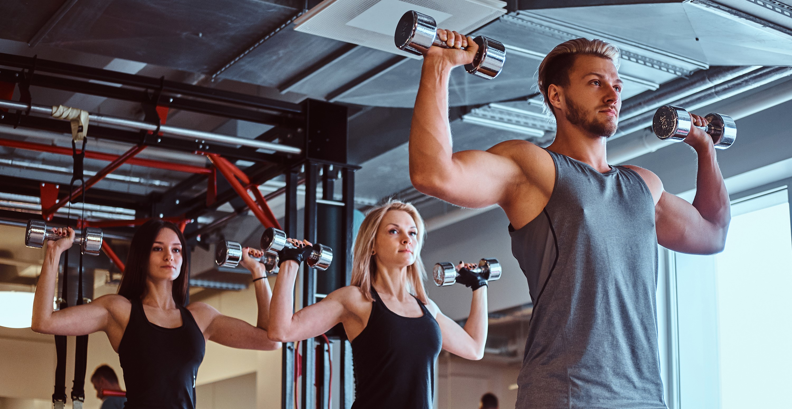
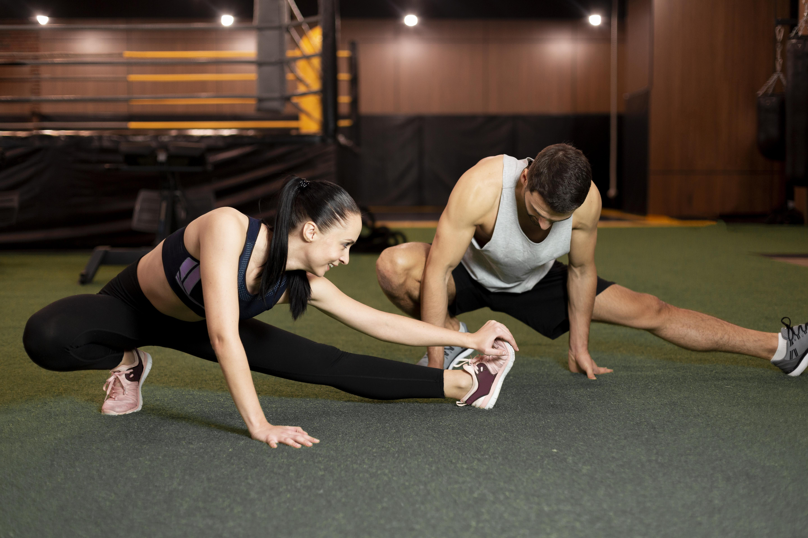
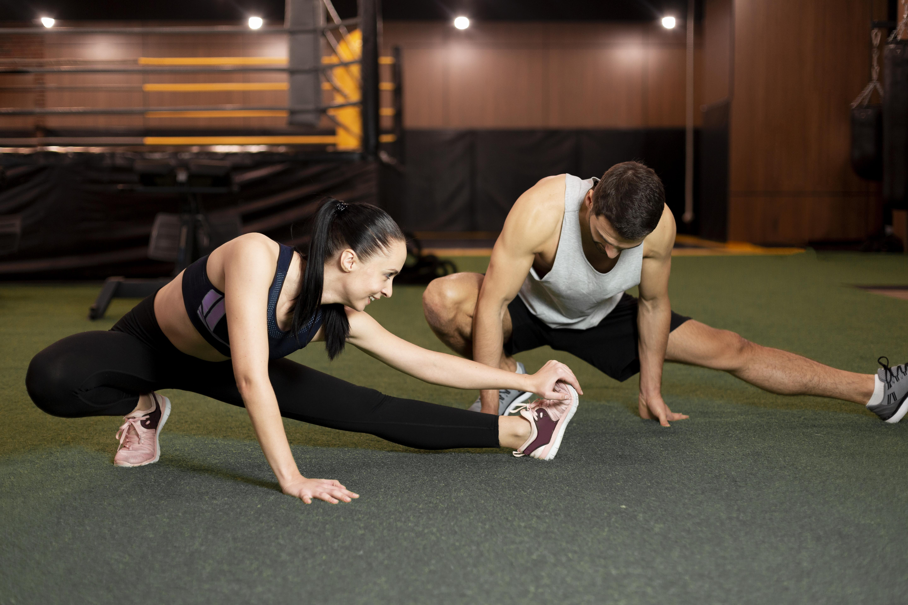
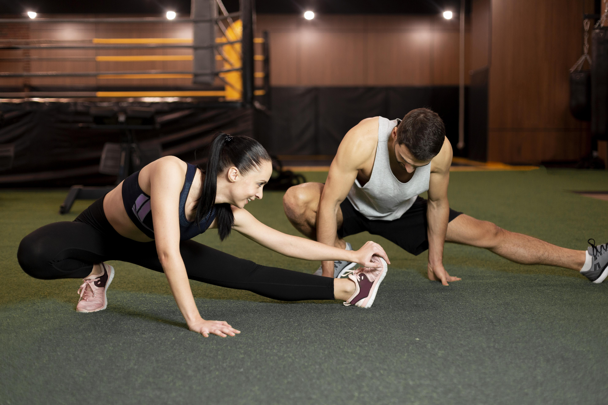
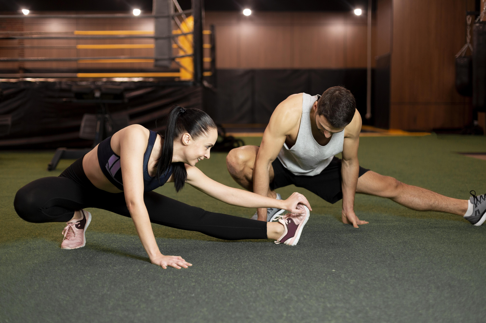

 




In the realm of strength training, a Push Day is a designated workout session that revolves around exercises that primarily involve pushing movements. These movements are centered on pushing weight away from your body, engaging various muscle groups to build strength, muscle mass, and overall fitness. Push Days are part of a structured workout split, which is a strategic way to organize your training routine to optimize muscle recovery and growth. During a Push Day, the spotlight is on the upper body muscle groups, the key players here include the chest, shoulders, and triceps. Let's break it down further: Chest: The chest muscles, or pectorals, are engaged in exercises like bench press and push-ups. These movements target the horizontal pushing motion, helping to develop a strong and well-defined chest. Shoulders: The deltoid muscles in your shoulders are activated during exercises like overhead presses and lateral raises. These movements work on your vertical pushing strength and contribute to those broad and strong shoulders you've been aiming for. Triceps: The muscles on the back of your arms, the triceps, are involved in extending your arms during movements like push-ups, dips, and tricep presses. They are crucial for overall arm strength and definition.
Improved Upper Body Strength: They effectively build strength and muscle in your chest (pecs), shoulders
(deltoids), and triceps.
Enhanced Core Strength and Stability: The use of dumbbells requires greater core engagement to stabilize your
body, strengthening your abdominal muscles and lower back.
Increased Range of Motion: The dumbbells allow your hands to move freely, which can increase the range of motion
in your shoulders and elbows compared to a standard push-up.
Better Balance and Stability: By providing a more unstable surface than the floor, dumbbells challenge and
improve your overall balance and shoulder stability.